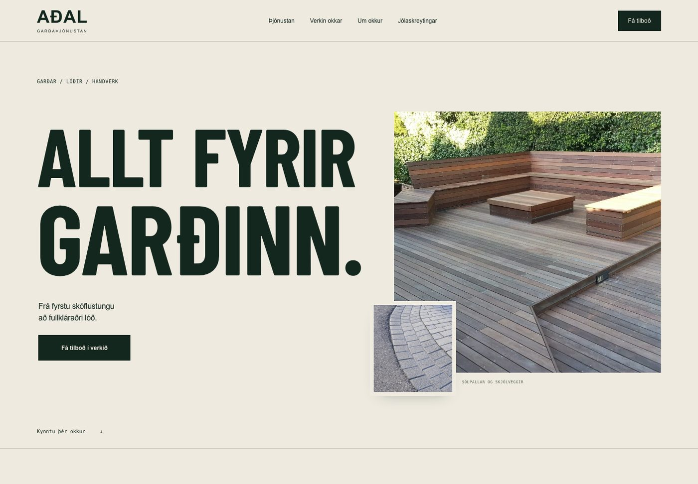
Vefur · 2026
Aðalgarður
Garðþjónusta: stórt letur, raunverulegar myndir úr verkum og skýr leið að tilboði.
Einar Sigurður Eiríksson · Reykjavík
Markaðsstjóri Stjörnugríss og hönnuður. Ég hanna vöruumbúðir og merkingar sem fara í prentun, og vefi sem fara í loftið — frá forskrift að afhendingu.
Tölur úr eigin skjölum og birtum vefjum, nóvember 2026.
01 — Vöruumbúðir
Hönnun á miðum, umbúðum og merkingum fyrir Stjörnugrís, BaraMatur, Stjörnufugl og Kjötbordið — með strikamerki, næringarupplýsingum, prentforskrift og efnisvali. Hér er úrval úr safninu.
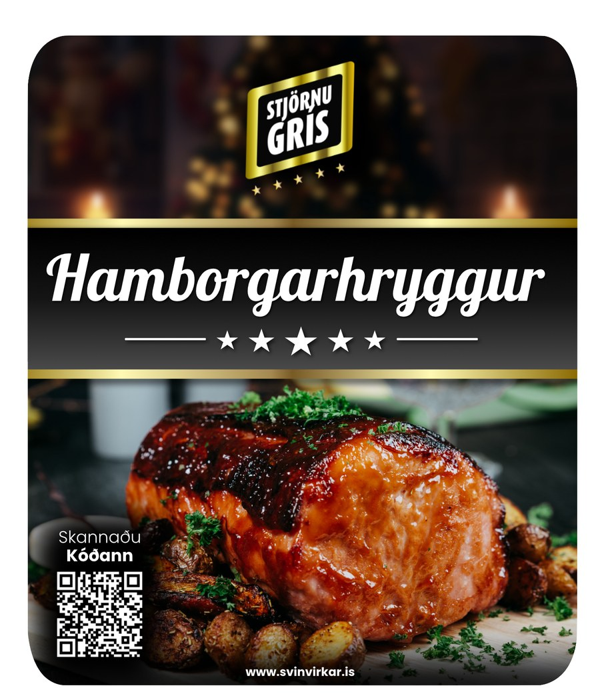
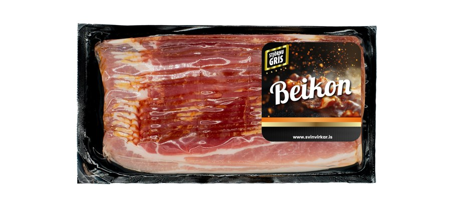
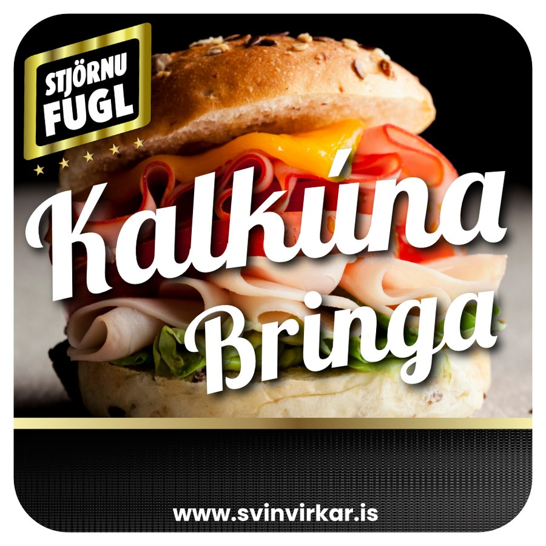
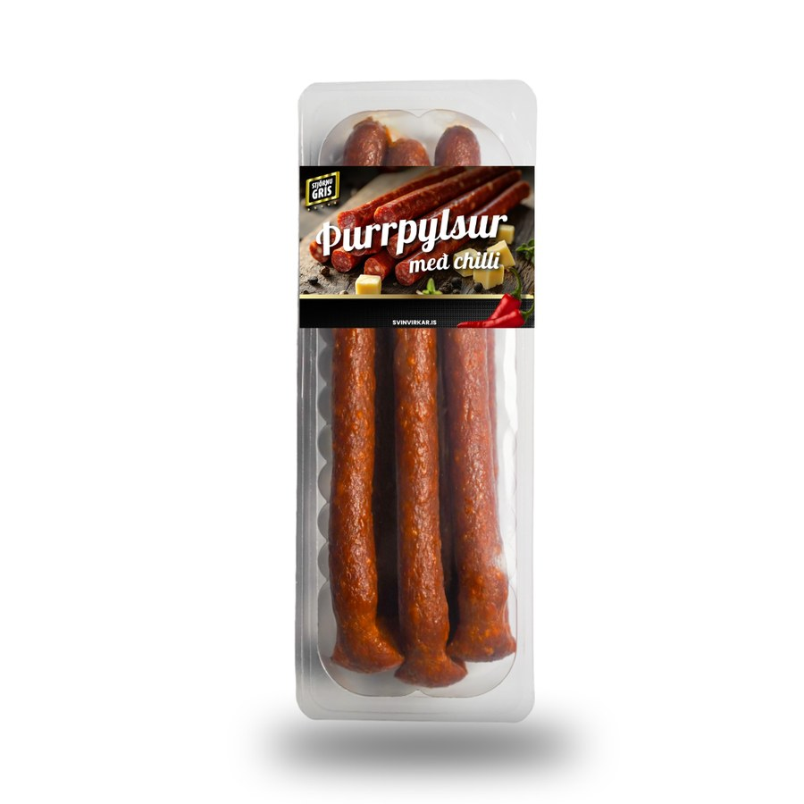
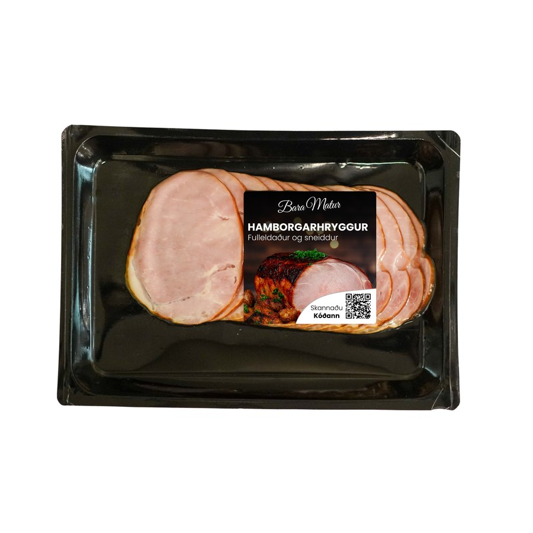
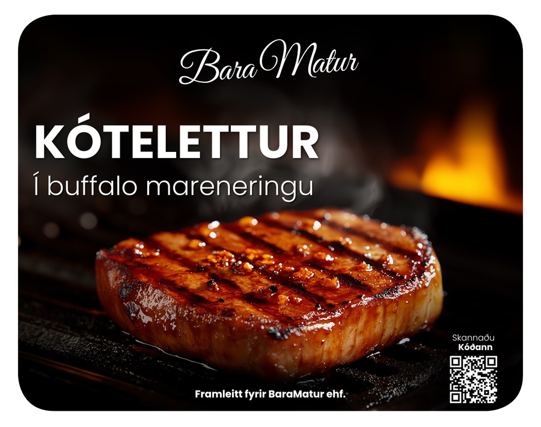
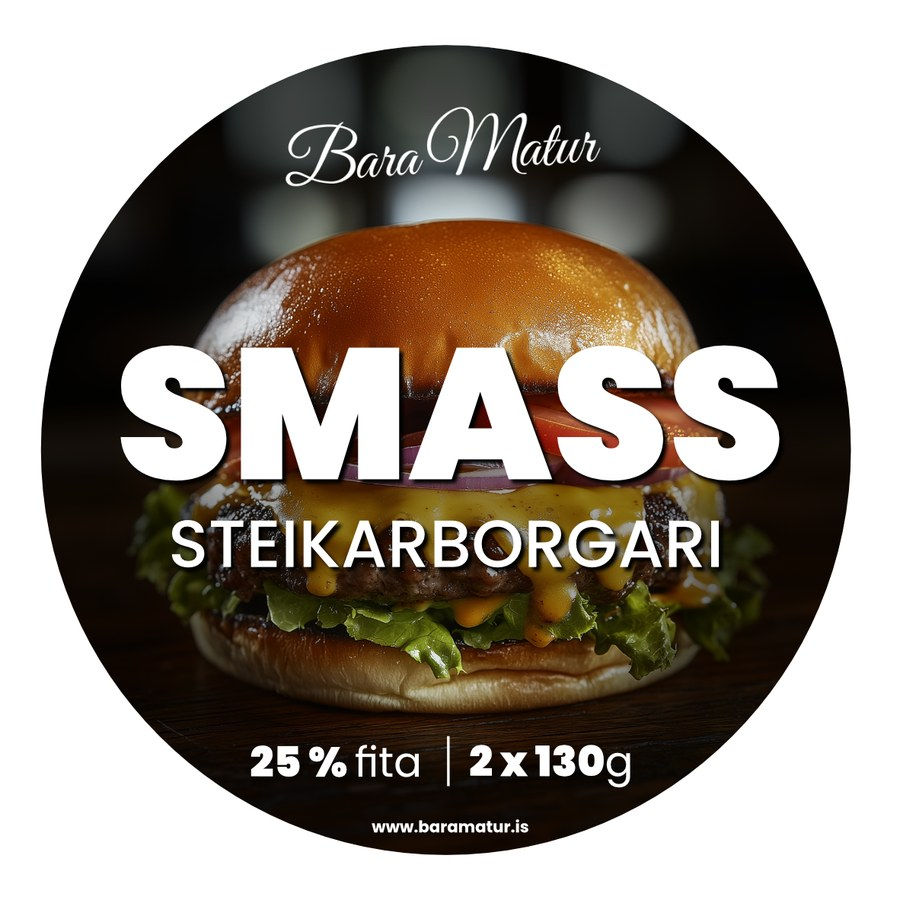
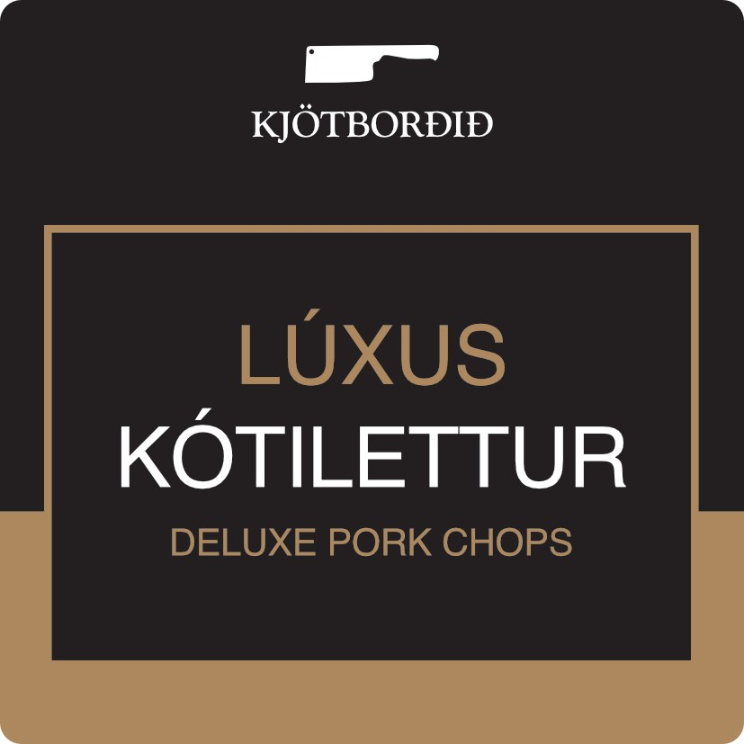
Hver miði er unninn með vörunúmeri, strikamerki, næringartöflu og prentforskrift fyrir viðkomandi umbúðir.
02 — Vefir

Vefur · 2026
Garðþjónusta: stórt letur, raunverulegar myndir úr verkum og skýr leið að tilboði.
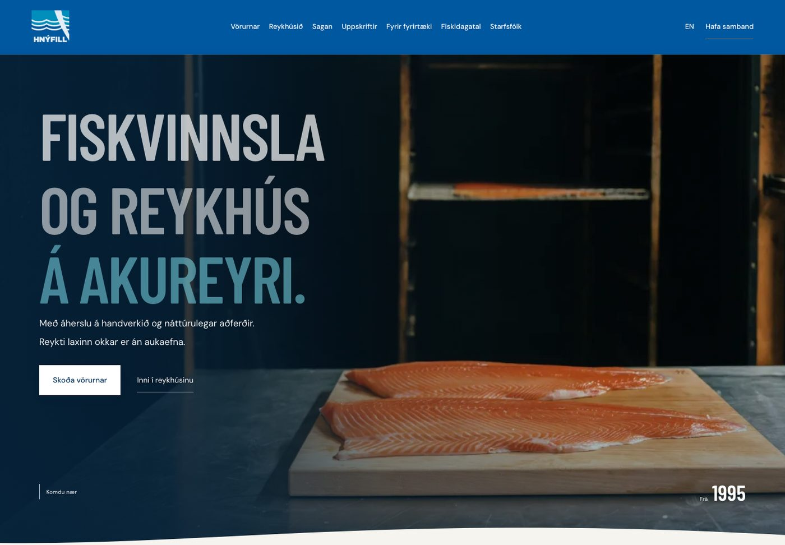
Vefur · 2026
Fiskvinnsla og reykhús: vörur, saga og fiskidagatal.
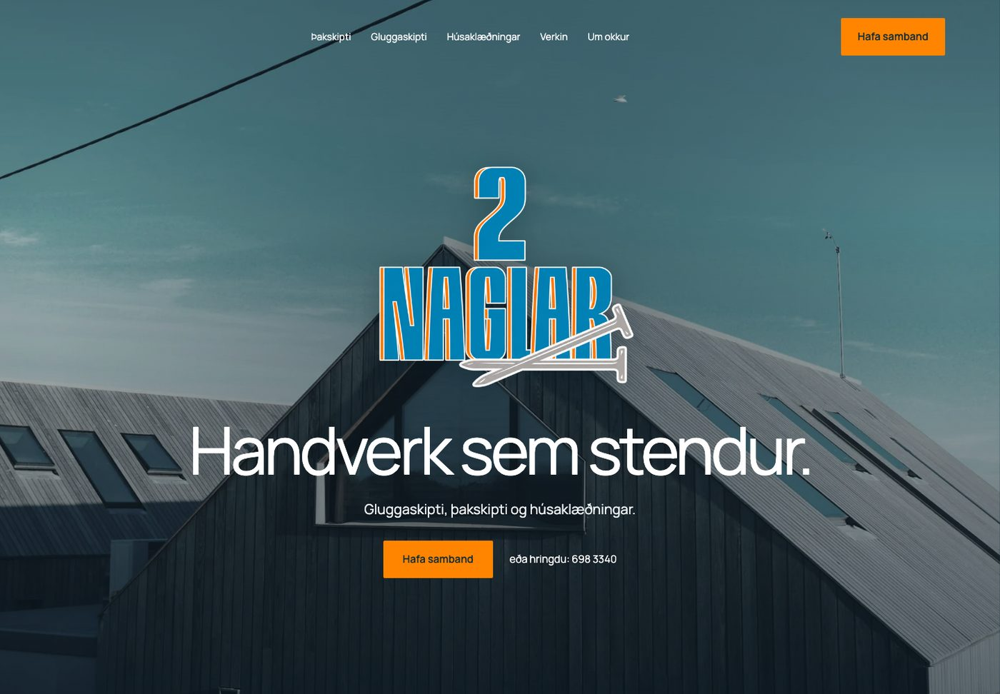
Vefur · 2026
Glugga-, pakskipta- og húsaklæðningaverktak: þjónusta, verk og tilboð.
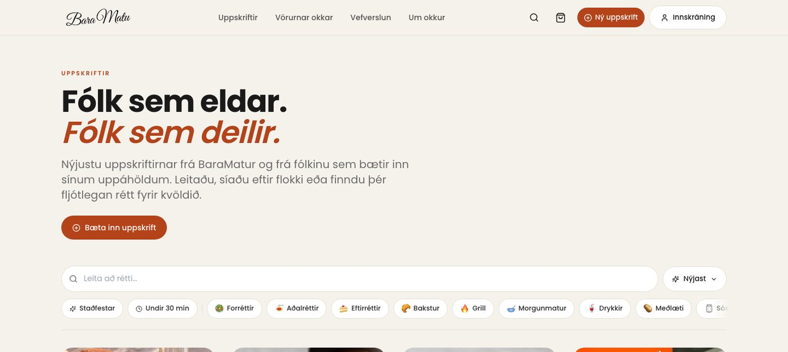
Vefur · rekstur
Uppskriftavefur með 141 uppskrift og 16.000+ fylgjendur. Greiddar auglýsingar og kostað efni.
03 — Prent og herferðir
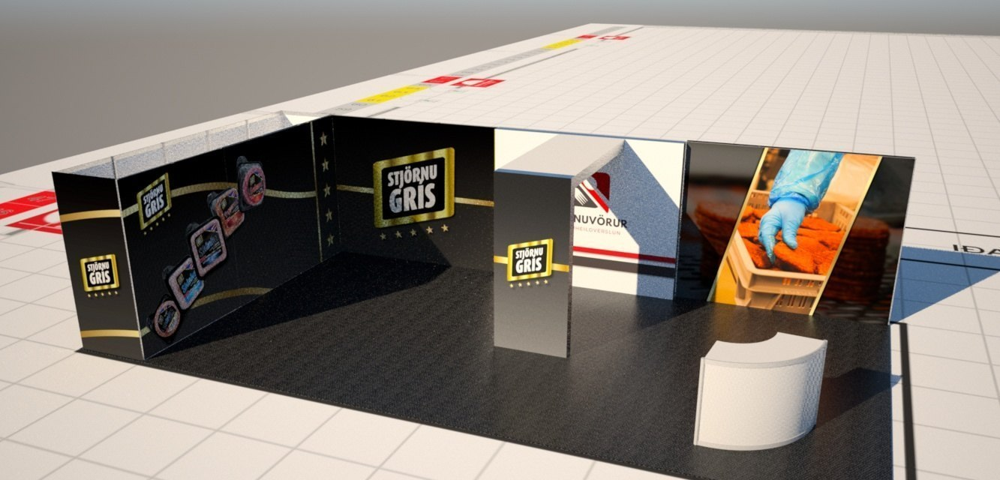
Útstilling · 2026
Bás 5 × 6 m, hönnun veggja, prentgögn og kynning fyrir Merkingu.
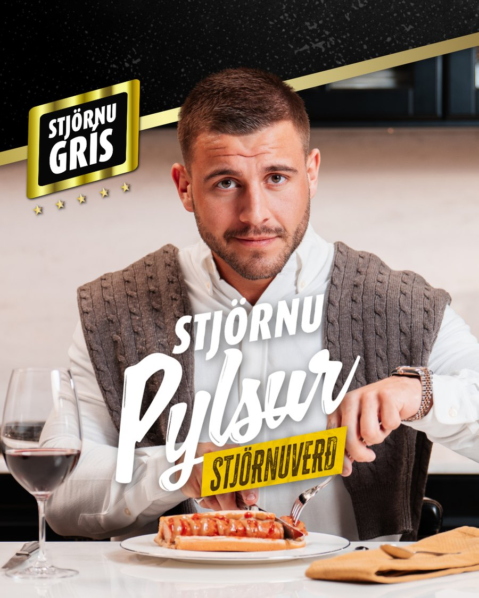
Herferð · 2026
Prentmiðar, filmur, auglýsingar og efni fyrir samfélagsmiðla.
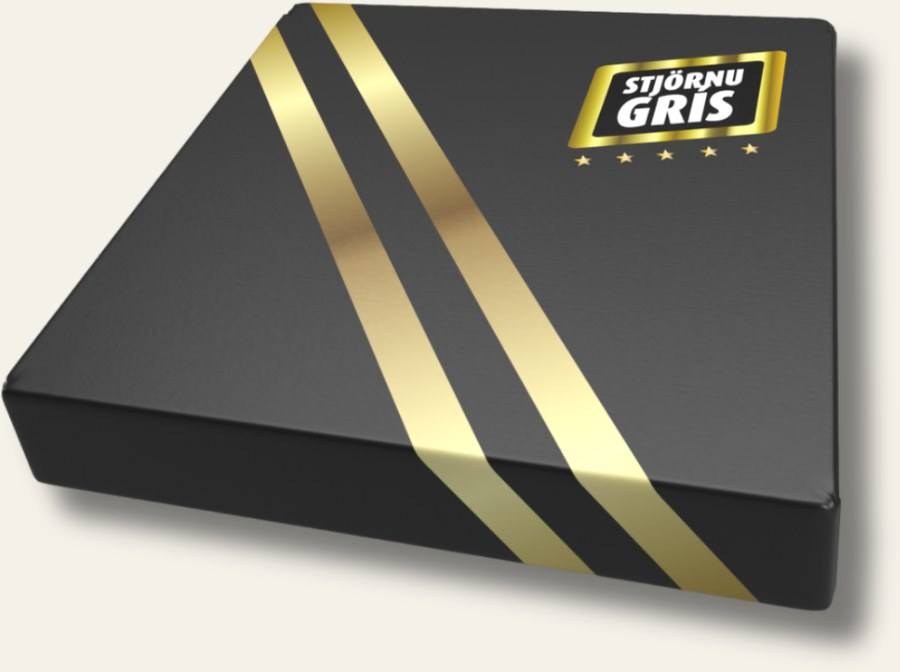
Umbúðir · gjafakassi
Kassahönnun með gylltu bandi og merki — frá þífánalausn að prentuðum kassa.
04 — Um mig
Ég vinn þar sem hönnun mætir framleiðslu.
Sem markaðsstjóri Stjörnugríss fer dagurinn í umbúðir, vörumerkingar, herferðir, gæðamál og samskipti við verslanir. Stóreldhúsið, Costco og vörunúmerin eru ekki óhlutbundin hugtök heldur verk sem þarf að klára.
Sjálfstætt vinn ég að vefjum og hönnun: Pökkum, BaraMatur og Telva Vefhýsingar. Þar er sama krafan — efnið á að lita vel út, virka og standast það sem er sagt um það.
05 — Samband
+354 694 7355 · Reykjavík · Vefir, umbúðir og prent